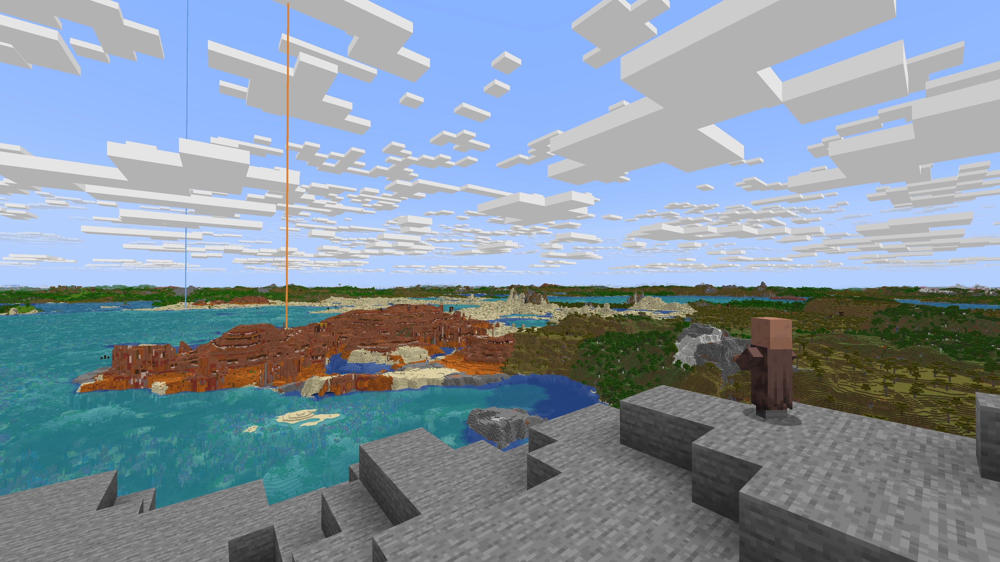

This server is set up to allow Java and Bedrock edition players to play together! In both cases, the server address is minecraft.olerud.com with the default port. Come join now!
Java Edition#
Optional Mods#
The server is set up to support a few mods for Java players. You can run these in either Fabric or Forge. If you are new to modding, I recommend installing a mod management client like Modrinth to get started.
Simple Voice Chat#
Simple Voice Chat adds proximity chat to Minecraft! The server is set up to handle voice chat properly so you can talk to your friends in game.
Please note that voice chat is only supported for Java players. Stick to Discord for talking with Bedrock players.
Distant Horizons#
Distant Horizons greatly increases the max view distance in Minecraft.

The server is set up to support the Distant Horizons mod, so you can see things very far away.
Bedrock Edition#
Join the server at minecraft.olerud.com now!
Limitations#
The server is running Java edition, so some Bedrock features you are used to may not work. For example, Java edition doesn’t have emotes, so other players will not see if you use an emote.
Modding Support#
Bedrock does not currently support mods, so voice chat will not work on the server. That being said, there is a workaround being developed, and I’m hopeful that we can get that rolled out in the near future.